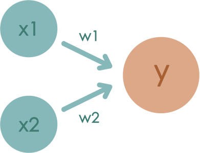

A perceptron receives multiple input signals and outputs one signal.
The "signal" in this case can be regarded as something "fluid" like an electric current or a river.
x1, x2 are the input signals and y is the output signal.
w1 and w2 are the weights (w is the first name of weight).
The ○ in the diagram are called "neurons" or "nodes".
When the input signal is sent to the neuron, it is multiplied by a fixed weight .
The neuron calculates the sum of the transmitted signals and outputs 1 only when the sum exceeds a certain threshold.
